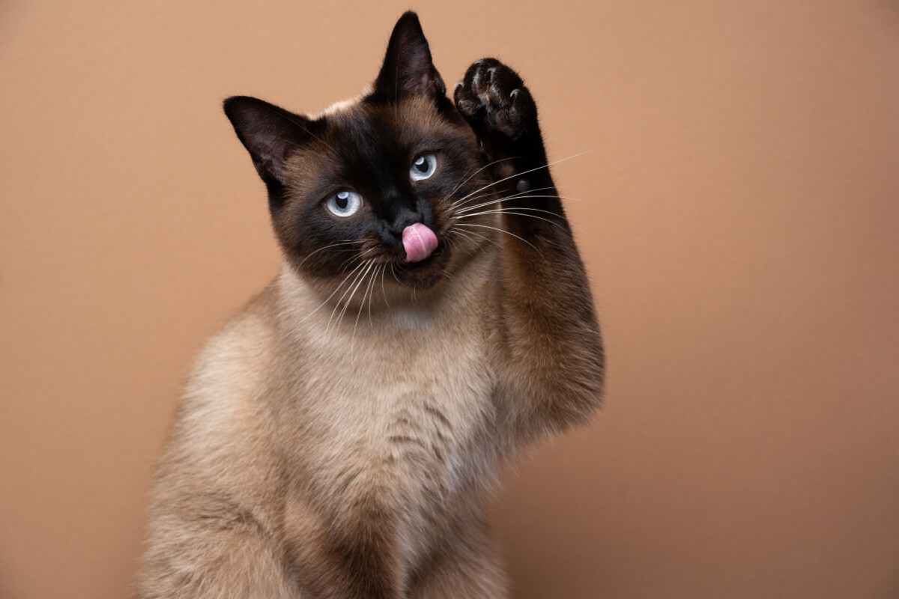

Sobre o gato siamês
O gato Siamês está entre os bichanos mais famosos do mundo. Isso porque sua beleza e postura altiva impressionam os apaixonados por felinos. Além disso, é muito fácil reconhecer o pet dessa raça, afinal, só os siameses possuem porte médio com orelhas altas e bem posicionadas na cabeça.
O gato Siamês adora receber a atenção dos tutores e, portanto, não abre mão dos momentos ao lado da sua família humana. E todo o carinho e amor dado aos felinos é recompensado com muita lealdade e diversão. Uma coisa é certa: os tutores de siameses nunca ficam sozinhos!
Imagens


Voltar para o menu